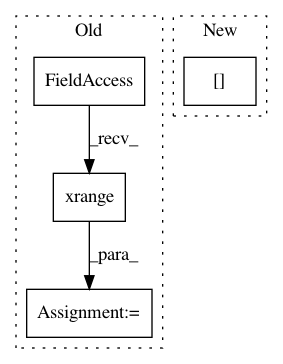

f5ba97d8316e20f445eac8a47e1cdeae3d2f38ca,imgaug/augmenters/geometric.py,PerspectiveTransform,_draw_samples,#PerspectiveTransform#Any#Any#,2834
Before Change
// cv2 perspectiveTransform doesn"t accept numpy arrays as cval
cval_samples_cv2 = cval_samples.tolist()
for i in sm.xrange(nb_images):
h, w = shapes[i][0:2]
points = self.jitter.draw_samples((4, 2), random_state=rngs[2+i])
points = np.mod(np.abs(points), 1)
// modify jitter to the four corner point coordinates
// some x/y values have to be modified from `jitter` to `1-jtter`
// for that
// top left -- no changes needed, just use jitter
// top right
points[2, 0] = 1.0 - points[2, 0] // h = 1.0 - jitter
// bottom right
points[1, 0] = 1.0 - points[1, 0] // w = 1.0 - jitter
points[1, 1] = 1.0 - points[1, 1] // h = 1.0 - jitter
// bottom left
points[0, 1] = 1.0 - points[0, 1] // h = 1.0 - jitter
points[:, 0] = points[:, 0] * w
points[:, 1] = points[:, 1] * h
// obtain a consistent order of the points and unpack them
// individually
points = self._order_points(points)
(tl, tr, br, bl) = points
// TODO remove these loops
// compute the width of the new image, which will be the
// maximum distance between bottom-right and bottom-left
// x-coordiates or the top-right and top-left x-coordinates
min_width = None
while min_width is None or min_width < self.min_width:
width_a = np.sqrt(((br[0]-bl[0])**2) + ((br[1]-bl[1])**2))
width_b = np.sqrt(((tr[0]-tl[0])**2) + ((tr[1]-tl[1])**2))
max_width = max(int(width_a), int(width_b))
min_width = min(int(width_a), int(width_b))
if min_width < self.min_width:
tl[0] -= self.shift_step_size
tr[0] += self.shift_step_size
bl[0] -= self.shift_step_size
br[0] += self.shift_step_size
// compute the height of the new image, which will be the
// maximum distance between the top-right and bottom-right
// y-coordinates or the top-left and bottom-left y-coordinates
min_height = None
while min_height is None or min_height < self.min_height:
height_a = np.sqrt(((tr[0]-br[0])**2) + ((tr[1]-br[1])**2))
height_b = np.sqrt(((tl[0]-bl[0])**2) + ((tl[1]-bl[1])**2))
max_height = max(int(height_a), int(height_b))
min_height = min(int(height_a), int(height_b))
if min_height < self.min_height:
tl[1] -= self.shift_step_size
tr[1] -= self.shift_step_size
bl[1] += self.shift_step_size
br[1] += self.shift_step_size
// now that we have the dimensions of the new image, construct
// the set of destination points to obtain a "birds eye view",
// (i.e. top-down view) of the image, again specifying points
// in the top-left, top-right, bottom-right, and bottom-left
// order
dst = np.array([
[0, 0],
[max_width - 1, 0],
[max_width - 1, max_height - 1],
[0, max_height - 1]
], dtype="float32")
// compute the perspective transform matrix and then apply it
m = cv2.getPerspectiveTransform(points, dst)
if self.fit_output:
m, max_width, max_height = self._expand_transform(m, (h, w))
matrices.append(m)
max_heights.append(max_height)
max_widths.append(max_width)
mode_samples = mode_samples.astype(np.int32)
return _PerspectiveTransformSamplingResult(
matrices, max_heights, max_widths, cval_samples_cv2,
mode_samples)
After Change
// cv2 perspectiveTransform doesn"t accept numpy arrays as cval
cval_samples_cv2 = cval_samples.tolist()
for shape, rng in zip(shapes, rngs[2:]):
h, w = shape[0:2]
points = self.jitter.draw_samples((4, 2), random_state=rng)
In pattern: SUPERPATTERN
Frequency: 3
Non-data size: 4
Instances
Project Name: aleju/imgaug
Commit Name: f5ba97d8316e20f445eac8a47e1cdeae3d2f38ca
Time: 2019-10-15
Author: kontakt@ajung.name
File Name: imgaug/augmenters/geometric.py
Class Name: PerspectiveTransform
Method Name: _draw_samples
Project Name: aleju/imgaug
Commit Name: bc87005e5dce729044e1a10286f9124d652e34d6
Time: 2019-08-25
Author: kontakt@ajung.name
File Name: imgaug/augmentables/kps.py
Class Name: Keypoint
Method Name: generate_similar_points_manhattan
Project Name: aleju/imgaug
Commit Name: 6411c9079a834fd7549ab4593261a3619519eb02
Time: 2019-09-04
Author: kontakt@ajung.name
File Name: imgaug/augmenters/size.py
Class Name: CropAndPad
Method Name: _augment_images